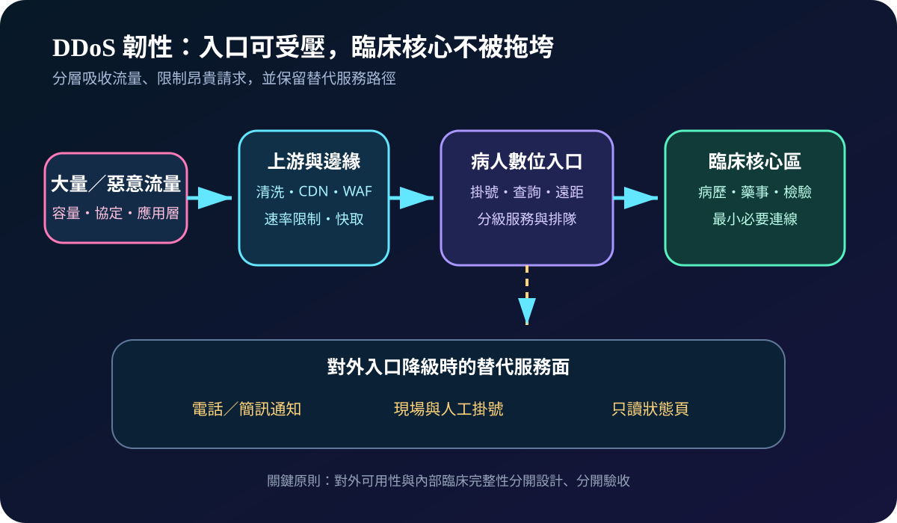
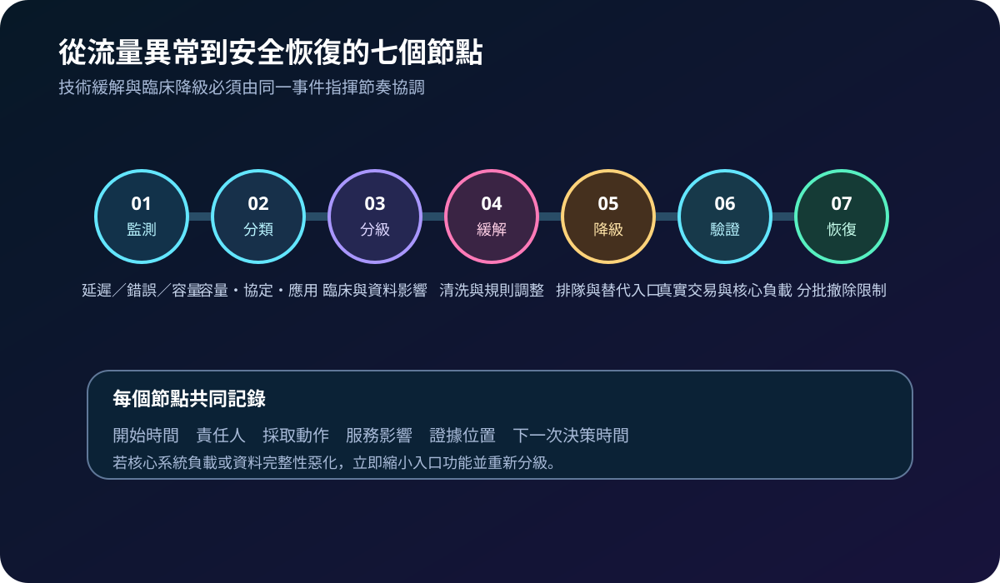
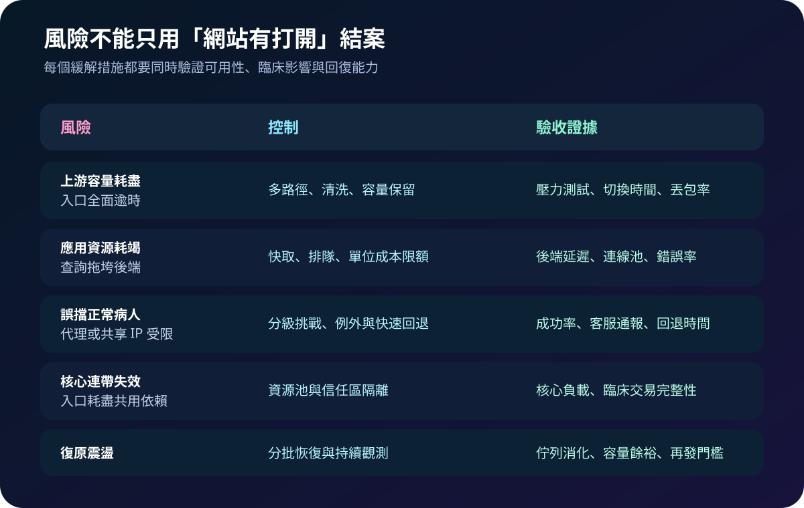

醫療資安國際觀察 · 2026-09-05
病人入口遭 DDoS 時如何維持服務：從多路徑分流到降級運作
作者：Dr. William｜醫療資訊與資安治理實務工作者
掛號、查詢、遠距醫療與對外 API 遭分散式阻斷服務攻擊時，問題不只在網站變慢；共用網路、身分或資料庫若被耗盡，可能把外部流量壓力傳入臨床核心。韌性設計需要同時保住必要服務、替代入口與安全恢復能力。
名詞解釋：三類 DDoS 與服務降級
容量型攻擊耗盡頻寬，協定型攻擊消耗網路設備或連線狀態，應用層攻擊則以看似正常但昂貴的查詢耗盡應用資源。服務降級不是任由系統失效，而是預先關閉非必要功能、限制高成本請求，將有限容量留給具臨床時效的流程。
國際現況與適用邊界
ENISA《Threat Landscape 2025》分析 2024 年 7 月至 2025 年 6 月間 4,875 起事件，DDoS 約占其記錄案例的 76.7%，多與駭客行動主義有關；該比例是歐盟整體樣本，不是醫療機構發生率，也不代表每起事件具有相同衝擊。CISA、FBI 與 MS-ISAC 的聯合指引將 DDoS 分為容量、協定及應用層，要求組織在事件前理解服務與供應商能力，事件中持續監測並協調緩解。
法域與效力：ENISA 報告反映歐盟威脅觀測，CISA 聯合指引與 NIST 文件屬美國風險管理資料，均不是台灣醫院的法定控制清單。台灣醫療機構可採用其分類、準備與應變方法；實際要求仍須依本地法規、醫院政策、電信與雲端契約、醫療流程及風險核定。
規劃：先定義必須維持的病人旅程
範圍應從網域、DNS、電信、CDN／WAF、身分服務、API 到後端資料庫畫出完整依賴，並標記掛號、急診資訊、遠距看診及合作院所介接的最低可用功能。責任至少涵蓋網路、應用、資安、臨床營運、客服、公關、電信與雲端供應商。驗收指標可採可用率、錯誤率、緩解啟動時間、核心系統負載、必要交易成功率、誤擋率、替代入口啟用時間及分批恢復時間。

實作：分層吸收、限制並驗證
- 建立正常基線：記錄流量、連線、應用延遲、交易成功率與後端資源，告警同時觀察技術及臨床指標。
- 預先協調上游：確認電信清洗、CDN、WAF、緊急窗口、啟動條件、可見日誌與責任邊界，演練 DNS 或路由切換。
- 限制高成本請求：對搜尋、報表、登入與 API 設定快取、排隊、速率及資源限額，保留必要交易的獨立容量。
- 隔離核心依賴：避免對外入口與電子病歷共用無上限的連線池、身分服務或資料庫資源；只允許最小必要流量。
- 啟動替代服務：使用只讀狀態頁、電話、簡訊及現場流程說明可用功能，避免病人反覆重試加重負載。
- 分批恢復：先恢復必要功能，觀察佇列、容量餘裕與錯誤率，再逐步撤除限制並保存事件證據。
風險：緩解本身也可能造成醫療中斷
只購買較大頻寬無法處理昂貴的應用層請求；過嚴的地理封鎖或驗證挑戰，可能誤擋使用共享網路、輔助科技或海外連線的病人。將全部流量導向單一供應商會形成集中風險；攻擊結束後一次解除所有限制，又可能因重試與積壓造成第二次失效。控制必須以真實交易、核心負載、病人通報及回退時間共同驗收。

可執行清單
- 是否能列出病人數位入口到核心系統的全部共用依賴？
- 是否分別測過容量型、協定型與應用層壓力情境？
- 上游供應商的緊急窗口、啟動條件與證據提供是否寫入程序？
- 必要功能、可暫停功能、替代入口與對外訊息是否已核定？
- 緩解規則是否監測誤擋、後端負載並可快速回退？
- 恢復是否採分批方式，且保留完整時間線與復盤事項？
來源
- ENISA｜ENISA Threat Landscape 2025（發布：2025-10-01；修訂：2026-01-09；查閱：2026-09-05）
- CISA、FBI、MS-ISAC｜Understanding and Responding to Distributed Denial-Of-Service Attacks（發布：2024-03-21；查閱：2026-09-05）
- NIST｜SP 800-61 Rev. 3, Incident Response Recommendations and Considerations for Cybersecurity Risk Management（發布：2025-04；查閱：2026-09-05）
內容說明
本文依健康台灣深耕計畫相關治理內容整理，並參考 ENISA、CISA、FBI、MS-ISAC 與 NIST 公開資料，提出台灣醫療機構可採用的 DDoS 分層防護、服務降級及復原驗收框架；不取代主管機關公告、法律意見、供應商設計或個案臨床決策。